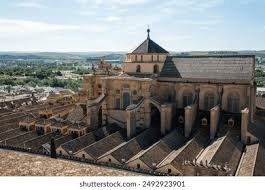

Toledo is a city located in central Spain, 70 km south of Madrid. Built upon a steep rock skirted by the Tagus River, the Historic City of Toledo still retains the essential features of an incomparable cityscape. The Historic City of Toledo, shaped by twenty centuries of history, encompasses about 260 ha, and has preserved a remarkable historical heritage and consolidated cultural tradition. It was one of the former capitals of the Spanish Empire and place of coexistence of Christian, Jewish and Muslim cultures during the Middle Ages. Successively, a Roman municipium, the capital of the Visigothic kingdom, a fortress of the Umayyad realms of Córdoba, an outpost of the Christian kingdoms against the Almoravid and Almohad empires, and in early modern period, between 1519 and 1561, the temporary seat of supreme power under Charles V. Despite the irreversible economic and political decadence of Toledo after 1561, when Phillip II eventually chose Madrid as his capital, a great number of architectural masterpieces from different periods were preserved. This singular array of historic buildings expresses both the original, highly characteristic beauty and the paradoxical syncretic hybrid forms of the Mudejar style, which sprang from the contact of heterogeneous civilisations in an environment where, for a long time, the existence of three major religions: Judaism, Christianity, and Islam, was a leading feature. The Historic City of Toledo is linked to deep popular traditions and continues to be the repository of more than 2,000 years of history. It is an exceptional testimony of several past civilizations: Rome, with vestiges of the circus, the bridge over the Tagus River, the aqueduct and the sewers, the Visigoths, with the remains of Royal Palatine complex, king Wamba´s walls, preserved early medieval churches, the Vega Baja site and the artifacts conserved in the Santa Cruz, and Visigothic Councils and Culture Museums.
Read more
Founded by the Romans in the 2nd century BC near the pre-existing Tartesic Corduba, capital of Baetica, Cordoba acquired great importance during the period of Augustus. It became the capital of the emirate depending on Damascus in the 8th century. In 929, Abderraman III established it as the headquarters of the independent Caliphate. Cordoba’s period of greatest glory began in the 8th century after the Moorish conquest, when some 300 mosques and innumerable palaces and public buildings were built to rival the splendors of Constantinople, Damascus and Baghdad. In the 13th century, under Ferdinand III, Cordoba’s Great Mosque was turned into a cathedral and new defensive structures, particularly the Alcazar de los Reyes Cristianos and the Torre Foraleza de la Calahorra, were erected. The Historic Centre of Cordoba now comprises the streets surrounding the Great Mosque and all the parcels of land opening on to these, together with all the blocks of houses around the mosque-cathedral. This area extends to the other bank of the River GuadaIquivir (to include the Roman bridge and the Calahorra) in the south, to the Calle San Fernando in the east, to the boundary of the commercial centre in the north, and incorporating the AIcázar de los Reyes Cristianos and the San Basilio quarter in the west. The city, by virtue of its extent and plan, its historical significance as a living expression of the different cultures that have existed there, and its relationship with the river, is a historical ensemble of extraordinary value. It represented an obligatory passage between the south and the “meseta”, and was an important port, from which mining and agricultural products from the mountains and countryside were exported. The Historic Centre of Cordoba creates the perfect urban and landscape setting for the Mosque. It reflects thousands of years of occupation by different cultural groups – Roman, Visigoth, Islam, Judaism and Christian-, that all left a mark. This area reflects the urban and architectural complexity reached during the Roman era and the splendour of the great Islamic city, which, between the 8th and the 10th centuries, represented the main urban and cultural focus in the western world. Its monumental richness and the unique residential architecture stand out. There are still many ancestral homes and traditional houses. The communal houses built around interior courtyards (casa-patio) are the best example of Cordoban houses. They are of Roman origin with an Andalusian touch, and they heighten the presence of water and plants in daily life. The Great Mosque of Cordoba represents a unique artistic achievement due to its size and the sheer boldness of the height of its ceilings. It is an irreplaceable testimony of the Caliphate of Cordoba and it is the most emblematic monument of Islamic religious architecture. It was the second biggest in surface area, after the Holy Mosque in Mecca, previously only reached by the Blue Mosque (Istanbul, 1588), and was a very unusual type of mosque that bears witness to the presence of Islam in the West. The Great Mosque of Cordoba was also very influential on Western Islamic art since the 8th century just as in the neo-Moorish style in the 19th century. Concerning architecture, it has represented a testing ground for building techniques, which have influenced both the Arabic and Christian cultures alike since the 8th century.
Read more 